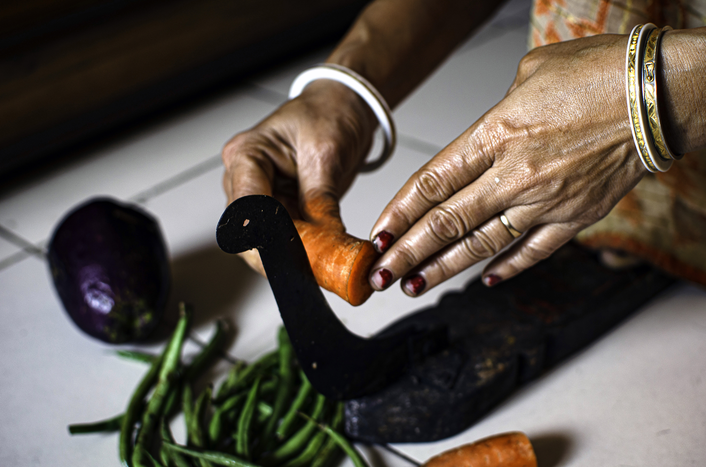
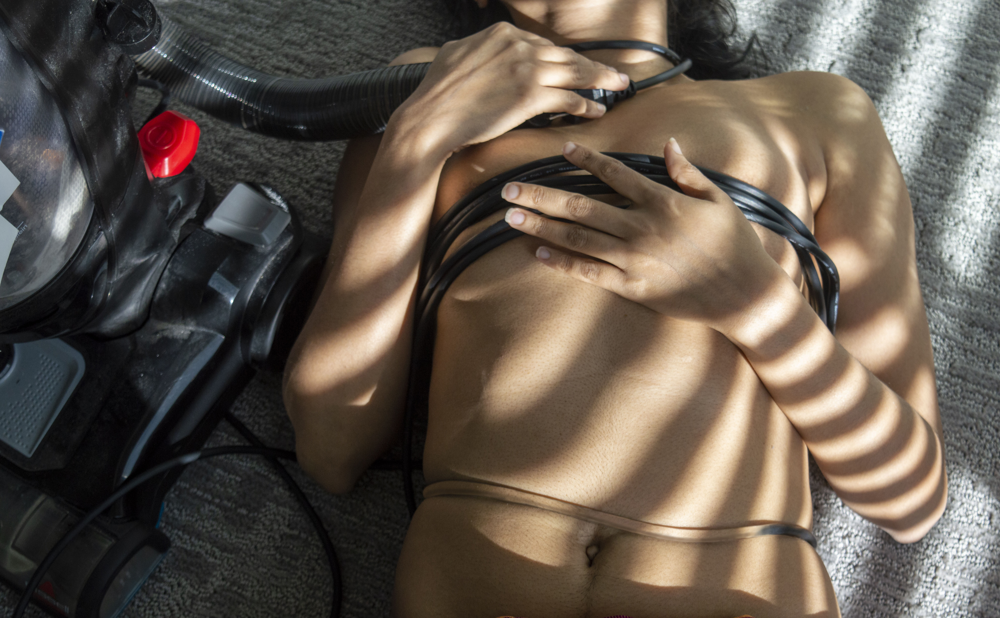

Project Description
The most significant impetus behind the photography series All you gonna do is make roti was my childhood experiences of growing up in India where the stereotypes associated with the ideal woman are still very strong. In this series, I photographed essential kitchen tools that are typically found in a Bengali household. Although finding these kitchen tools in Canada was very difficult, especially during this pandemic, I managed to find a few and I intend to capture more of these tools later in future. I digitally manipulated some of the images to portray the transformation of a woman's body into an object. Using both a subtle and sometimes humorous tone I explore this evolution that many girls and women go through, becoming the tools and the very substance of their expected stereotypes. The title of the series was derived from what I was told pretty often in my childhood. My elderly relatives often told me “your academic qualifications do not matter since all you eventually will do is make roti (Indian bread) in future” .They would also say things like “learn household chores from your mother, otherwise no one will marry you” or “women instinctively know how to cook and clean. If you do not know, then you shouldn’t call yourself a woman”. I would burden myself thinking that I was less of a woman since I had different interests. I was interested in cricket rather than the toy kitchen set I got from my aunt on my 4th birthday. In my youth, I tried to fit these expectations; tried to be good at domestic chores just to fit into my milieu and to be appreciated by my elders. It took a long time for me to accept myself the way I am and to feel confident exploring the gendered stereotypes that are so present in my culture from a critical perspective. This series takes those experiences into account and challenge the cultural perception from a critical point of view.


